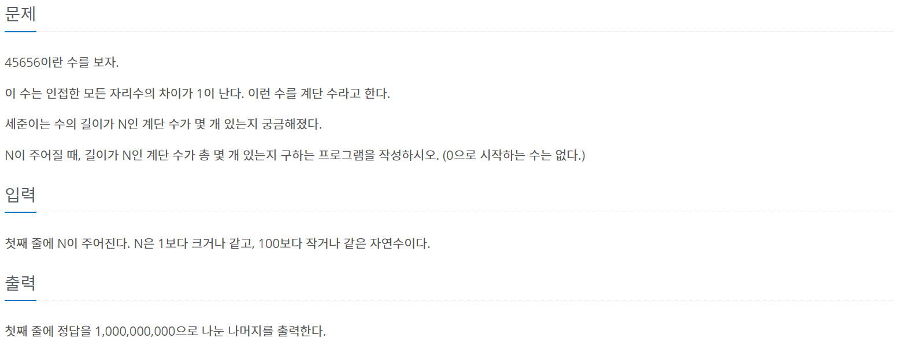
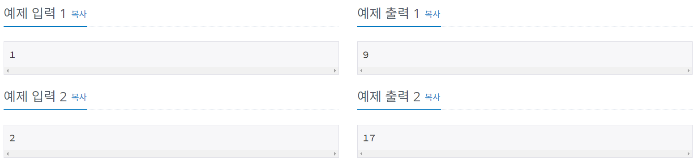

#INFO
난이도 : SILVER1
알고리즘 유형 : DP(다이나믹 프로그래밍)
문제 출처 : https://www.acmicpc.net/problem/10844
 
#SOLVE
계단수란 인접한 모든 자리수가 1씩 차이나는 수이다. 예를들어 45654는 모든 자리수가 1씩 차이나기에 계단수이다.
DP[N][L] = 길이가 N이고, 마지막 자리의 숫자가 L 인 계단수 라고 가정해 보자.
_ _ _ . . _ L - 마지막 숫자 L 앞의 자리인 N-1 번째에 올 수 있는 숫자는 L - 1 혹은 L + 1 이다. (계단수는 1씩 차이나기 때문이다.) 따라서, DP[N][L] = DP[N-1][L-1] + DP[N-1][L+1] 라는 점화식을 세울 수 있다.
단, L이 0 or 9 인 경우는 예외로 처리해 주어야 한다. (0보다 1 작은 수는 -1이고, 9보다 1 큰수는 10 이기에 위에 세운 점화식에 그대로 적용시키면 중복이 발생하기 때문이다.)
#CODE
#include <iostream>
using namespace std;
long long dp[101][10];
long long mod = 1000000000;
int main() {
int n;
cin >> n;
// °è´Ü¼ö 1
for (int i=1; i<=9; i++){
dp[1][i] = 1;
}
// DP SOLVE
for (int i=2; i<=n; i++){
for (int j=0; j<=9; j++){
dp[i][j] = 0;
if (j >= 1){
dp[i][j] += dp[i-1][j-1];
}
if (j <= 8){
dp[i][j] += dp[i-1][j+1];
}
dp[i][j] %= mod;
}
}
// PRINT
long long ans = 0;
for (int i=0; i<=9; i++){
ans += dp[n][i];
}
ans %= mod;
cout << ans << '\n';
return 0;
}